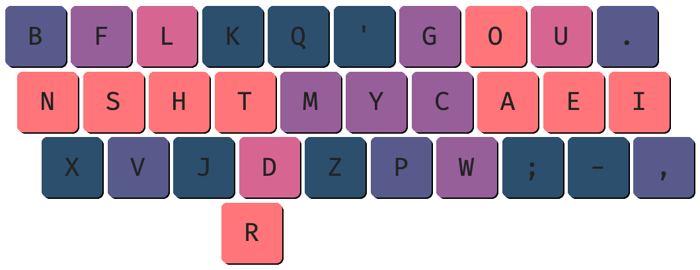

Design
Night

DTM Index
The index finger is most dexterous finger.
Night leverages this by placing the most frequent consonant T on the index.
D and M play a support role by further capitalizing on the index's performance properties.
LH Middle
The middle finger is the longest finger; thus, it favors stretching up.
Night utilizes this by placing the most frequently repeated letter L on the top row.
H plays the supporting role by acting as the higher usage home row key.
FSV Ring
The ring finger is less dexterous than the index finger.
Night acknowledges this by using the less frequent letters F and V
F is slightly more frequent to account for the ring finger's slight upwards stretch bias.
BN Pinky
The pinky is the least dexterous finger.
Night accounts for this by using only one, low-frequency letter B off of the home row.
C Index
The index finger is the most dexterous finger.
Night leverages this by grouping together all the medium frequency letters.
C acts as the higher frequency home row key.
OA Middle
The middle finger is the longest finger; thus, it favors stretching up.
Night utilizes this by placing the second most frequently repeated vowel O on the top row.
A plays the supporting role by filling the remaining position with a high frequency letter.
UE Ring
The ring finger is less dexterous than the index finger.
Night acknowledges this by using only one medium-frequency letter U off of the home row.
U is placed on the top row to account for the ring finger's slight upwards stretch bias.
Punctuation Pinky
The pinky is the least dexterous finger.
Night accounts for this by using the low-frequency punctuation keys . and , off of the home row.
DTMK Index
The primary focus of Night is great statistics (extremely low SFBs and SFSs) and focused finger usage.
Night specifies high index usage - the most dexterous finger. The most common consonant came to be T (akin to Colemak). Of the letter pairings, DTMK makes use of this most effectively. DTMK allows for great stats while not requiring the usage of corner index keys.
The addition of D and M makes up two other high-frequency positions. K takes up the third slot as a low usage letter. This keeps finger movement reasonable.
The employment of M in the central column was done to reduce finger travel distance. Modifications are possible.
LHJ Middle
Traditionally, R is paired with L. H is, in fact, the better pairing, and thus is placed as such.
A common column to see in this setup is LHM; however, this confers 2uSFSs and a good deal of movement.
By simply omitting the M, these issues are resolved. J fills the last slot, keeping the movement low along with near 0%SFBs.
FSV Ring
Using S on the pinky is one of the most common home row setups. However, SS is rather frequent.
By placing S on the ring instead, we avoid the pinky handling these repeats.
F and V both are relatively low frequency and pair almost perfectly with S and one another, making them well suitable for filling the remaining positions.
BNX Pinky
Second only to H in minimal repeats, N serves as a perfect candidate for the pinky.
Paired with B, forming only 0.1%SFBs and low in frequency, BNX completes the setup.
Vowel Setup / Right Hand
The choice of C on the index is actually rather tenuous. Y is, in most regards, a better alternative. Thus, you can freely swap between the two, depending on which you prefer.
Word lists, as seen in the likes of Monkeytype, have particular biases towards C while remaining generally frequent outside of such.
On the other hand, Y is particularly prevalent in quotes and common speech, mainly due to variations of you. Pick this if you completely avoid speedtyping or word list based typing.
Regardless of which you choose, one or the other should remain on the home row in order to minimize travel distance. If you would instead like to reduce LSBs, check out the potential Modifications.
The remaining letters are placed according to the least travel distance.
FAQs
Q: Why is R on the left thumb?
A: R is placed on the left thumb due to it creating lower redirects and avoiding long same-hand sequences Ex. Program compared to on the right thumb.
Q: What if I want to use R on the right thumb?
A: The overall difference is minimal once you account for the effects of space. Feel free to use whichever you prefer.
Q: Can I use this on an Alice or split(spacebar) rowstagger keyboard?
Traditional
Angle Modded

Q: Why is E the most common letter on the ring finger?
A: The ring finger is far less dexterous compared to the middle finger. Thus, prioritizing the higher combined usage and finger movement to the middle finger is preferable.
Q: What about symbols?
A: Symbol usage is heavily based on individual circumstance. Thus, it is better to personalize your symbol placements rather than use a generalized solution. The existing symbols on Night are placeholders.
Negatives
I would love to say there are no downsides, but like any other layout, Night has its flaws.
P itself is not particularly common. However, the majority of its pairings involve vowels Ex. PO, PA, PE. This leads it to form a decent amount of LSBs.
In quote heavy corpora, the L_V scissor is somewhat frequent due to love.